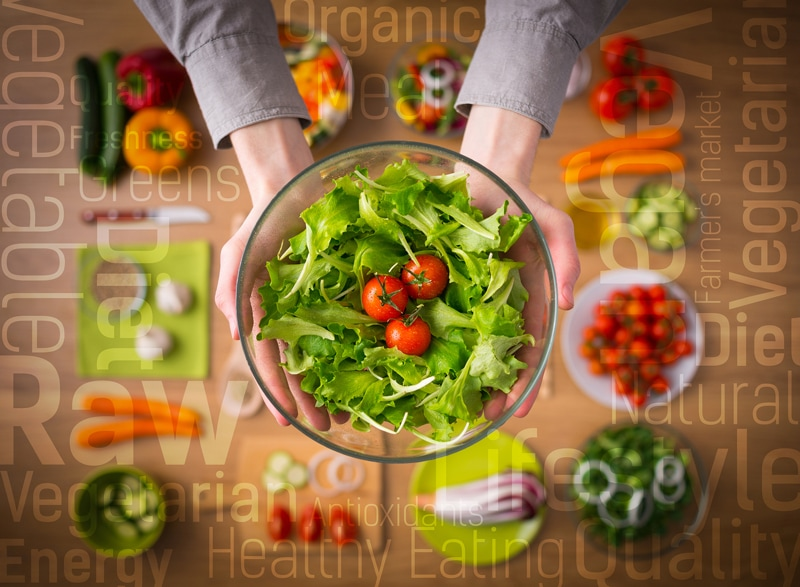

#1 – Where and How do I get All my Nutrients?
The key to a healthy eating lifestyle is one that brings balance and variety. We need a wide array of nutrients to achieve and sustain optimal health. It’s not enough when they stand on their own. I mean really, who wants to play on the merry-go-round by themselves? Nutrients, much like children, do better when they play together.

For example, vitamin C enhances the body’s absorption of iron. Vitamin D is a fat-soluble vitamin and should be taken with fat. With the aid of fat, vitamin D then enables calcium in doing its job! You won’t find turmeric alone on the merry-go-round either; black pepper and healthy fat will join in on the fun.
How to Enhance Your Nutrition
- Be sure to enjoy a wide variety of fresh, ripe, raw, organic fruits, and veggies.
- As the fruits ripen, their antioxidant levels increase.
- Unripe fruits usually have more complex varieties of carbohydrates, and often, these complex carbs cannot be digested by the body as well.
- Memorize and avoid the fruits and veggies listed on the Top Dirty Dozen list. Learn which produce items are more harmful to eat if NOT organic.
- Eat all colors of the rainbow to get a full spectrum of nutrients.
- Red foods contain large amounts of beta-carotene (vitamin A), fiber, and the antioxidants quercetin, vitamin C, and lycopene.
- Orange foods are incredibly healthy with lots of antioxidants including beta-cryptoxanthin and beta-carotene which converts to vitamin A in our bodies.
- Yellow foods contain antioxidants such as carotenoids and bioflavonoids.
- Green foods are a source of vitamins A, C, and K, iron, antioxidants such as carotenoids and flavonoids, and other nutrients including chlorophyll, lutein, zeaxanthin, and folate.
- Blue and purple foods contain lutein, vitamin C, quercetin, and phytochemicals which are known as anthocyanins and resveratrol.
- Black foods contain antioxidants and are a great source of anthocyanins.
- Always include nutrient-packed green foods.
- Green leafy salads.
- Add green leaves to smoothies.
- Juice greens with other fruits and veggies.
- Blend greens into soup recipes.
- Include potent mineral-rich sea veggies.
- Eat a balance of omega-3 foods.
- Get flax seeds in your diet with recipes for crackers, cereals, and loaves of raw bread.
- Enjoy chia seeds in puddings, smoothies, and other raw treats.
- Snack on or incorporate Brazil nuts, cashews, walnuts, hemp seeds, and hazelnuts.
- Sea vegetables/algae are also good sources of omega-3.
- Vegetables highest in omega-3s include Brussels sprouts, kale, spinach, and watercress.
- Soak and sprout nuts, seeds, and grains to further tap into their rich nutrients.
- The soaking process helps to decrease the presence of anti-nutrients which naturally occur in plant seeds and interfere with our ability to digest vitamins and minerals from the plants.
- A major benefit of sprouting is that it unlocks beneficial enzymes, which make all types of grains, seeds, beans, and nuts easier on the digestive system.
- Enzyme inhibitors are found in plant foods and prevent adequate digestion resulting in protein deficiency and gastrointestinal upset. Tannins and difficult-to-digest plant proteins like gluten are enzyme inhibitors.
- Learn more (here).
- Add fermented foods to your diet.
- Fermentation creates probiotics, increases healthy bacteria, enzymes, minerals, vitamins, and predigests foods that are hard for humans to break down in the digestive tract.
- Enjoy foods such as cultured nut/seed cheeses, kefir, kimchi, and kombucha.
- Check out my cultured and fermented recipes (here).
- Switch your table salt to Pink Himalayan salt.
- Table salt is stripped of minerals, bleached, and heavily processed.
- Pink Himalayan salt is rich in 84 different minerals.
- Add Pink Himalayan salt to anything and everything, sweet foods included.
- Learn more (here).
Protein
- Proteins are large; complex molecules made up of amino acids that play many critical roles in the body. They do most of the work in cells and are required for the structure, function, and regulation of the body’s tissues and organs.
- Your body needs protein for many reasons, here are just a few; for growth and maintenance of tissues, they regulate body processes to maintain fluid balance, proteins help form immunoglobulins, or antibodies, to fight infection, as well as supplying your body with energy.
B12
- Vegans, whether cooked or raw, are at risk of not getting enough B12 into their diet.
- Vitamin B12 benefits your mood, energy level, memory, heart, skin, hair, digestion, and more.
Omega-3s
- Omega-3 fatty acids are called long-chain fatty acids. The four main types of these are ALA, DPA, EPA, and DHA.
- EPA and DHA are derived from mother’s milk, algae, fish, and grass-fed meat products.
- ALA is derived from plant sources of omega-3 such as green plants, flax, chia, hemp, pumpkin seeds, and walnuts.
- Omega-3 essential fatty acids (EFAs) are important and healthy nutrients. They help regulate blood clotting, reduce inflammation, build cell membranes, and support overall cellular health.
- Inadequate omega-3 intake has been associated with conditions of dry eyes and poor eye structure development in children. (1)
Disclaimer
This website is not intended to provide medical advice. All content, including text, graphics, images, and information available on this site is for general informational, entertainment, and educational purposes only. The content is not intended to be a substitute for professional diagnosis or treatment. The author of this site is not responsible for any adverse effects that may occur from the application of the information on this site. You are encouraged to make your own healthcare decisions, based on your research and in partnership with a qualified healthcare professional.
© AmieSue.com